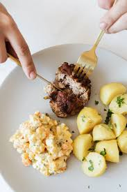
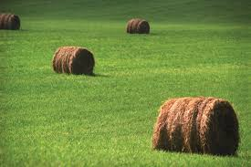
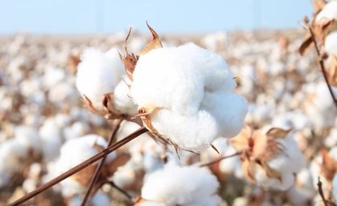
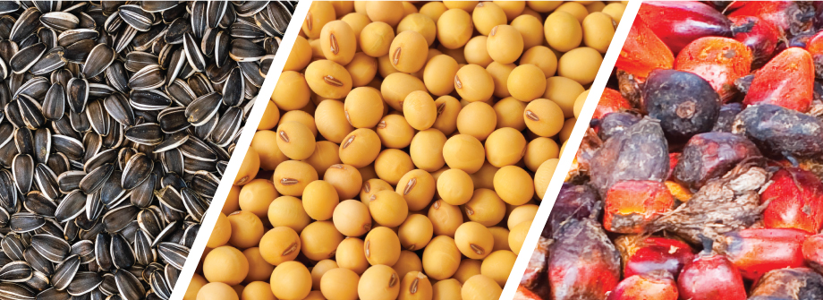
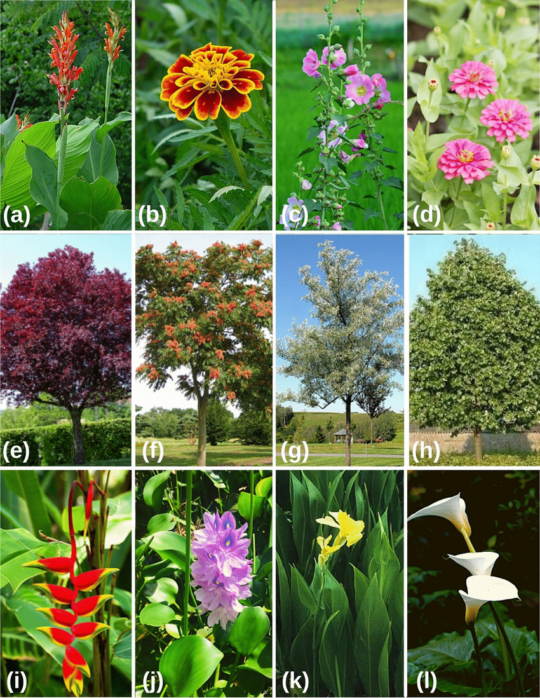
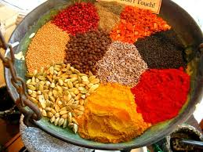
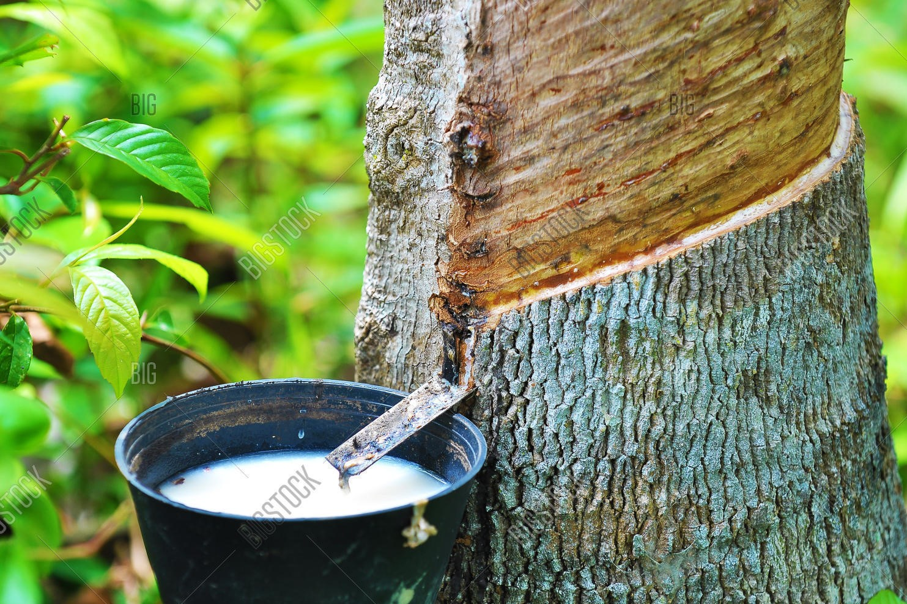
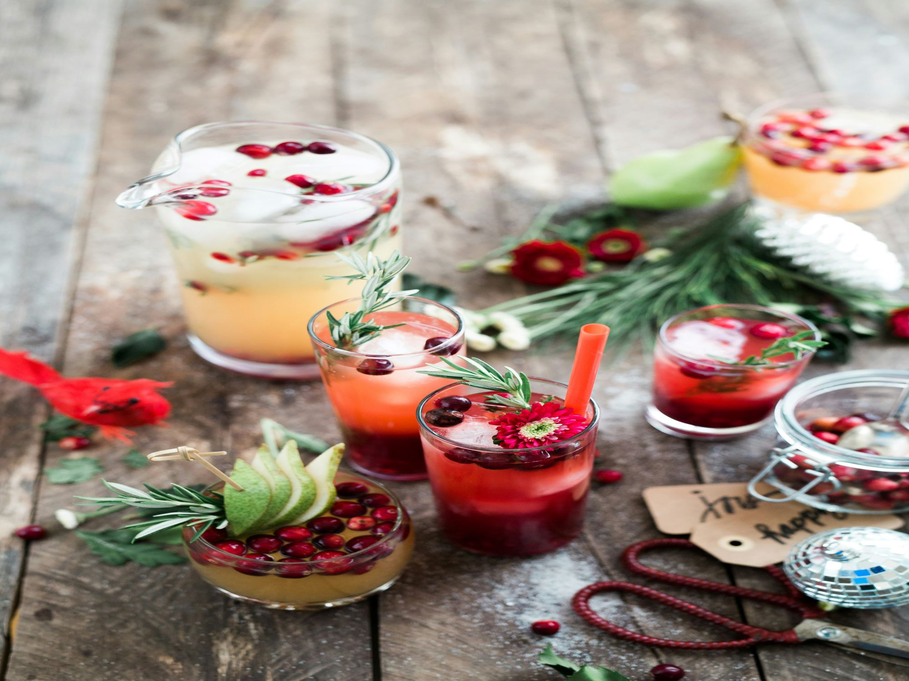

Crops are plants product that can be grown and harvested for profit or subsistence.
crops falls into six different categories:
food crops
feed crops
fiber crops
oil crops
ornamental crops
Spices
Latex
Beverages

Food crops : These are agriculture produce that are cultivated for the purpose of feeding human being,
either for profit making or subsistence.
food crops include fruit such as orange, vegetables such as spinarch,Grains such as corn,wheat,
millet rice etc, tubber like yam.

Feed crop : These are animal food that are produced by carefully selecting and blending ingredients
to provide highly nutritional diet that improve the health of animal. examples of feed crops include wheat, soybeans, corn, nutmeg and mace,oat,
Barley, cotton, millet etc.

Fiber crops : These are crops grown mainly for the purpose producing fiber, used
for making materials such as cloth, paper,carpets, rope,belt etc.

Oil crops: These are crops that are cultivated or grown for the purspose of oil production
these following are the form of crops for oil extraction:
soybeans
peanut
cotton
Rapeseed
sunflower
canola
coconut
olive
palm kernel

Ornamental crops : These are crops which are cultivated or grown for the purpose of beautifying the environment.
Example include:
sunflower
Lantana flower
ice plant
lawn grasses
morning glory
spider lily
rose flower

Spices: These are dried plants substance used for flavoring, coloring, or preserving food.
examples
cinnamon, clove , ginger, and pepper.

Latex: this is a milky fluid produce by certain plants, such as rubber trees, and can be proccessed into
various products, including rubber.
product made from Latex include:
Medical glove: use in healthcare settings for protection against conterminants and pathogen.
Condoms : for concraception and protection against sexual;y transmited infection.
Ballons : commonly use for decoration, celebartion, and children entertainment
Rubber band: used for bunding items together and security objects.
mattresses and pillow : it is used in makin mattresse and pillow for its durrability, resillience, and comfort.
clothing and fashion accessories : it is used in makin clothing items such as bodysuit,leggings,dresses,gloves, and stockings etc.

Beverages : these are liquids which are specifically prepared for human consumption.
They serve various purposes, which include hydration,refreshment, nutrition and enjoyment.